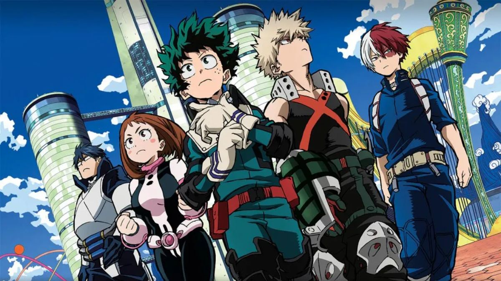

Em algum momento durante o Século Perdido, um homem chamado Joy Boy esteve em uma ilha localizada no fim da Grand Line. Ali, ele deixou um tesouro de valor inimaginável. As histórias desse tesouro na ilha final despertaram o interesse de Gol D. Roger, que interpretou a proibição da exploração da ilha pelo Governo Mundial como prova de que isso era real.
Somente os membros dos Piratas do Roger que viajaram para a ilha sabem exatamente o que é o grande tesouro. Ao chegarem lá e vê-lo, os Piratas do Roger simplesmente começaram a rir. Roger o descreveu como um "conto cheio de risadas", o que lhe deu a ideia de nomear a ilha final como "Laugh Tale" ("conto para rir" em tradução livre). Algum tempo depois da descoberta da tripulação, o mundo em geral começaria a se referir a esse tesouro como "One Piece".
Assista a Primeira Opening de One Piece
Boku no Hero

Em um mundo onde 80% da população mundial possuem super poderes, o tímido estudante Midoriya Izuku teve a infelicidade de nascer sem poderes. Grande fã do sorridente All Might, o herói conhecido como o símbolo da paz, Izuku, sofre com a frustração de saber que jamais terá uma individualidade especial para que possa se tornar, assim como seu grande ídolo, um defensor dos fracos e oprimidos.
Mesmo sofrendo bullying por seus amigos de escola, como o arrogante Katsuki, o garoto nunca abandonou o herói existente dentro de si. Gentil e generoso, ele está sempre pronto a ajudar quem precisa.
Porém, um inesperado encontro irá mudar o destino de Izuku. Destino esse que o levará a ingressar no tão sonhado colégio U.A., instituição para onde os grandes heróis vão estudar e treinar. A partir daí, as cortinas de uma fantástica aventura repleta de personagens cativantes e temerosos vilões se abrem para o jovem Midoriya.
Assista a Primeira Opening de Boku no Hero
Haikyuu
O estudante do ensino médio Shōyō Hinata se apega ao voleibol depois de ver um jogo do campeonato nacional na televisão. Embora não seja muito alto, ele se determina a seguir os passos do ídolo do campeonato, apelidado de "Pequeno Gigante", depois de ver seus jogos. Ele cria um clube de voleibol e começa a praticar sozinho. Eventualmente, os outros cinco membros juntam-se à equipa no seu último ano do ensino fundamental, mas são derrotados em seu primeiro torneio depois de serem desafiados pela equipa favorita do campeonato, que inclui o chamado "Rei da Corte" Tobio Kageyama, na primeira rodada. Embora a equipa de Shōyō sofra uma derrota miserável, ele promete eventualmente superar Tobio e derrotá-lo. Mas quando ele entra no ensino médio logo descobre que estão no mesmo time de vôlei.